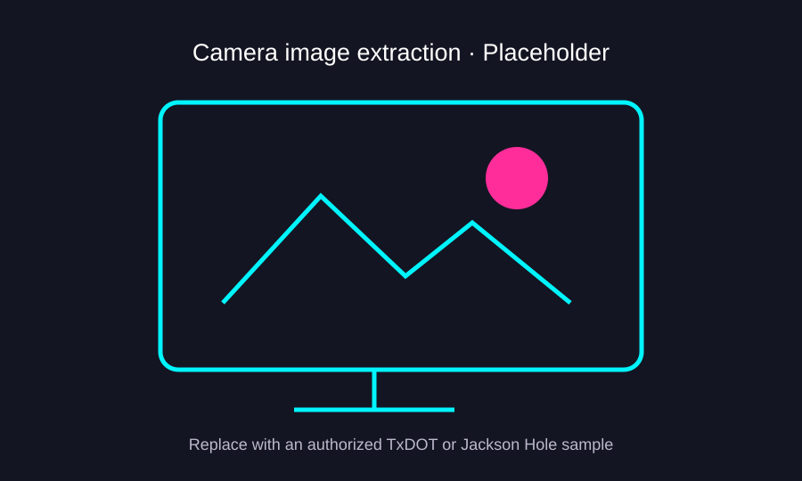

PROJECT CASE STUDY
Traffic Camera Image Extraction
Python workflows to collect TxDOT camera snapshots and extract frames from live video streams.
01Project summaryScope and context
02MethodologyHow I approached the work
I used Selenium and BeautifulSoup to discover TxDOT camera image URLs and download still images. For Jackson Hole live streams, I used Streamlink and video-frame extraction to save images from camera feeds. The public GitHub repository includes the original scripts and updated versions with configurable paths.
03FiguresProject visual

PROJECT TAKEAWAYS
Why This Project Matters
Making recurring visual data usable
Practical and scientific value
Automating the collection of roadway-camera snapshots and video frames converts repetitive manual retrieval into a more consistent source of time-indexed visual data. Those images can support subsequent review and analysis without claiming that this extraction pipeline itself performed object detection or predictive modeling.
What it demonstrates as a data scientist
The work strengthened my Python automation, OpenCV and data-acquisition skills, especially around repeatable extraction, file organization and preparing unstructured visual inputs for downstream computer-vision workflows. It illustrates how reliable data collection is often the first step toward more advanced analytics.